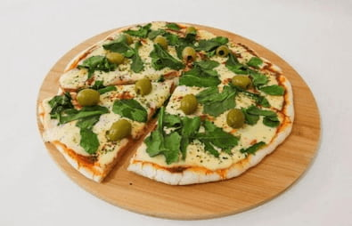

Ingredientes: * 3 huevos * 1 banana maduro * 4 cucharadas colmadas de leche en polvo. Si no tuvierais leche en polvo, podríais sustituirla por avena
Preparación Para realizar este delicioso budín, en primer lugar, debes separar las claras de las yemas de huevo y batir las claras en un recipiente a punto de nieve. Cuando estén listas, agregue las yemas y siga mezclando. Reserve por un momento. Seguidamente, pele y triture la banana madura. Puede machacarlo con un tenedor o con una batidora en otro recipiente. Añada las 4 cucharadas de leche en polvo y mezcle hasta que se integren muy bien ambos ingredientes Finalmente, mezcle la preparación de la banana con el huevo, integrando con movimientos envolventes, formando una masa homogénea. Coloque la mezcla un molde engrasado y hornee durante 30 minutos a 200°C. Pasado el tiempo, deje enfriar, desmolde y disfrute.
Ingredientes * 1/2 kilo harina de mandioca * 350 gramos de queso puede ser varios * 150 cc aceite oliva * 4 huevos * Leche cantidad necesitaría depende de los huevos
Paso a paso 1 Primero vamos a rallar el queso medio grande va estar bien, por otro lado poner en el hacer una corona con la mandioca. El queso. El aceite de oliva y los huevos y unir, sin amasar solo unir si es necesario poner un poquito de leche. Tiene que quedar una masa suave no seca. Una vez lista la masa si amasar por 3 a 5 minutos 2 Cocinar porciones chiquitas y cocinar a 160 por 20 a 25 minutos o hasta que abajo de cada chipa tenga piso
ingredientes * 1/4 Taza de salsa de tomate Lácteos * 20 g De queso mozarella * 1/4 De taza de queso partisano * albahaca fresca al gusto * 1 Cucharada de aceite de girasol * 2 Cucharada de aceite de oliva * 1 Cucharada de polvo de hornear o de levadura * 20 Cucharadas de agua tibia * sal y pimienta la gusto * 3 Tazas de harina de mandioca
Paso a paso mezclar los secos agregar el aceite y la levadura por último el agua y amasar. hornear y cuando la masa ya esté lista agregar la salsa de tomate, quesos y decoramos con albhaca
